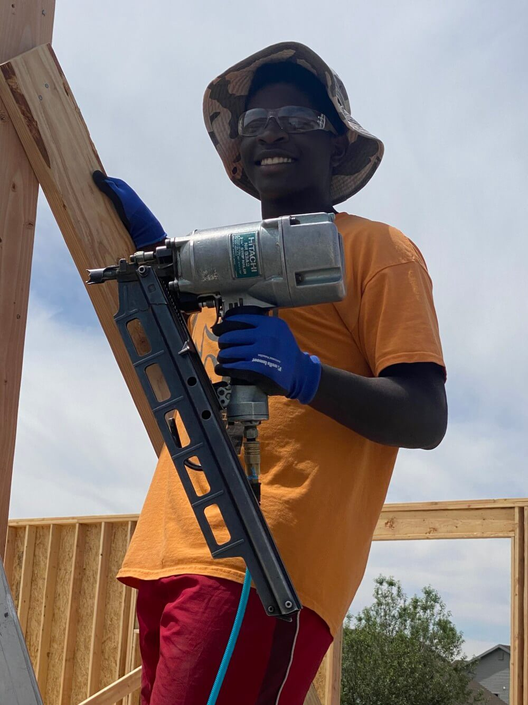
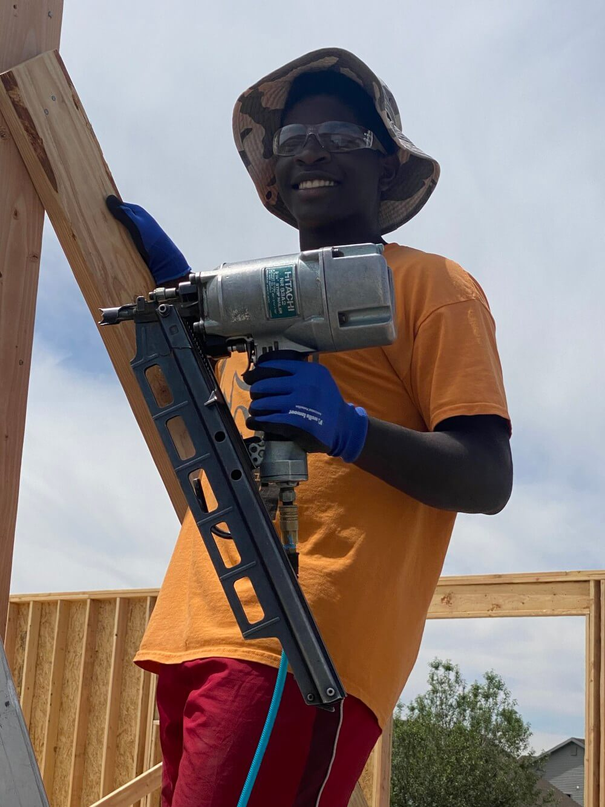

On this page you will find more information about the various jobs I have been able to do and the experience I gained through them. I have been able to work with a variety of companies and by doing so have learned how to adapt to new environments with varying challenges. The photos on this page are designed to share some of those challenges I mentioned earlier and my takeaway from them. With each photo, there will be information on the job assignment, its challenges, and my personal contributions to help resolve them. Also on this site will be my most recent jobs and what skills I was able to learn from them. At the very bottom of this page will be a short, ordered list that quickly summarizes skills I have taken from different jobs and experiences. This page is not intended to be an extensive list of every job I have had. Rather, this page gives a brief overview of jobs that have increased my skills and helped me to become who I am today. If you have any questions about any of the pages or would like to contact me, my information will be in the footer of this site in the right-hand corner.
 
